4. Ações: o modelo
Voltemos à arquitetura de uma aplicação Spring MVC:
 |
No capítulo anterior, analisamos o processo que leva a solicitação [1] ao controlador e à ação [2a] que irão processá-la, um mecanismo chamado de roteamento. Além disso, apresentamos as diferentes respostas que uma ação pode enviar ao navegador. Até o momento, apresentamos ações que não utilizavam a solicitação que lhes era enviada. Uma solicitação [1] traz consigo diversas informações que o Spring MVC apresenta à ação na forma de um modelo. Não se deve confundir esse termo com o modelo M de uma vista V [2c], que é gerado pela ação:
 |
- a solicitação HTTP do cliente chega como [1];
- em [2], as informações contidas na solicitação serão transformadas no modelo de ação [3] — frequentemente, mas não necessariamente, uma classe — que servirá de entrada para a ação [4];
- em [4], a ação, a partir desse modelo, irá gerar uma resposta. Esta terá dois componentes: uma vista V [6] e o modelo M dessa vista [5];
- a visualização V [6] utilizará seu modelo M [5] para gerar a resposta HTTP destinada ao cliente.
No modelo MVC, a ação [4] faz parte do C (controlador), o modelo da vista [5] é o M e a vista [6] é o V.
Este capítulo aborda os mecanismos de ligação entre as informações transportadas pela solicitação, que são, por natureza, cadeias de caracteres, e o modelo da ação, que pode ser uma classe com propriedades de diversos tipos.
Observação: o termo [Modèle d'action] não é um termo reconhecido.
Criamos um novo controlador para essas novas ações:
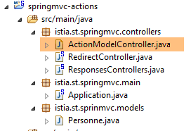 |
O controlador [ActionModelController] será, por enquanto, o seguinte:
package istia.st.springmvc.controllers;
import org.springframework.web.bind.annotation.RestController;
@RestController
public class ActionModelController {
}
- linha 5: vale lembrar que a anotação [@RestController] faz com que a resposta enviada ao cliente seja a serialização em cadeia de caracteres do resultado das ações do controlador;
4.1. [/m01]: parâmetros de um GET
Adicionamos a seguinte ação [/m01]:
// ----------------------- recuperação de parâmetros com GET------------------------
@RequestMapping(value = "/m01", method = RequestMethod.GET, produces = "text/plain;charset=UTF-8")
public String m01(String nom, String age) {
return String.format("Hello [%s-%s]!, Greetings from Spring Boot!", nom, age);
}
- linha 4: a ação aceita dois parâmetros denominados [nom] e [age]. Eles serão inicializados com parâmetros que possuem esses mesmos nomes na solicitação HTTP GET;
Os resultados no Chrome para [1-3] são os seguintes:
 |
- em [1], a consulta GET com os parâmetros [nom] e [age];
- em [3], percebe-se que a ação [/m01] recuperou corretamente esses parâmetros;
4.2. [/m02]: parâmetros de um POST
Adicionamos a seguinte ação [/m02]:
// ----------------------- recuperar parâmetros com POST------------------------
@RequestMapping(value = "/m02", method = RequestMethod.POST, produces = "text/plain;charset=UTF-8")
public String m02(String nom, String age) {
return String.format("Hello [%s-%s]!, Greetings from Spring Boot!", nom, age);
}
- linha 4: a ação aceita dois parâmetros chamados [nom] e [age]. Eles serão inicializados com parâmetros que possuem esses mesmos nomes na consulta HTTP POST;
Os resultados com [Advanced rest Client] são os seguintes:
 |
- em [1-3], a consulta POST com os parâmetros [nom] e [age];
- em [4-5], define-se o cabeçalho HTTP [Content-Type] da consulta POST. Deve ser [Content-Type: application/x-www-form-urlencoded];
- em [6], [Form Data] fornece a lista de parâmetros de uma operação POST. Aqui, vemos os parâmetros [nom] e [age];
- em [7], a resposta do servidor que mostra que a ação [/m02] recuperou corretamente os parâmetros [nom] e [age]; ;
4.3. [/m03]: parâmetros com os mesmos nomes
Vimos no parágrafo 2.5.2.8 que a lista de seleção múltipla podia enviar ao servidor parâmetros com os mesmos nomes. Vamos ver como uma ação pode recuperá-los. Adicionamos a seguinte ação [/m03]:
// ----------------------- recuperar parâmetros com os mesmos nomes-----------------
@RequestMapping(value = "/m03", method = RequestMethod.POST, produces = "text/plain;charset=UTF-8")
public String m03(String nom[]) {
return String.format("Hello [%s]!, Greetings from Spring Boot!", String.join("-", nom));
}
- linha 2: a ação aceita um parâmetro chamado [nome[]]. Ele será inicializado aqui com todos os parâmetros que tenham esse nome, seja em um GET ou em um POST, já que, neste caso, o tipo da solicitação não foi especificado;
Os resultados são os seguintes:
 |
- por meio de um POST e [1], enviam-se os parâmetros [2];
- também são inseridos parâmetros no URL e no [3];
- no [4], os quatro parâmetros com o mesmo nome [nom]: [Query String parameters] são os parâmetros do URL, [Form Data] são os parâmetros enviados;
- em [5], percebe-se que a ação [/m03] recuperou os quatro parâmetros denominados [nom];
4.4. [/m04]: mapear os parâmetros da ação em um objeto Java
Considere a seguinte nova ação [/m04]:
// ------ mapear os parâmetros em um objeto (Command Object) ---------------
@RequestMapping(value = "/m04", method = RequestMethod.POST)
public Personne m04(Personne personne) {
return person;
}
- linha 3: a ação tem como parâmetro uma pessoa do seguinte tipo:
public class Personne {
// identificador
private Integer id;
// nome
private String nom;
// idade
private int age;
....
// getters e setters
...
}
- para criar o parâmetro [Personne personne], o Spring MVC cria um [new Personne()];
- em seguida, se houver parâmetros com os nomes dos campos [id, nom, age] do objeto criado, ele os instancia com os campos por meio de seus setters;
- linha 4: a ação retorna um tipo [Personne], que será, portanto, serializado como uma sequência de caracteres antes de ser enviado ao cliente. Vimos que, por padrão, a serialização realizada era do tipo jSON. O cliente deveria, portanto, receber a string jSON de uma pessoa;
Veja um exemplo:
 |
- em [1], os parâmetros [id, nom, age] para construir um objeto [Personne];
- em [2], a sequência jSON dessa pessoa;
O que acontece se não enviarmos todos os campos de uma pessoa? Vamos tentar:
 |
- em [2], apenas o parâmetro [id] foi inicializado;
4.5. [/m05]: recuperar os elementos de um URL
Ou seja, a nova ação [/m05] a seguir:
// ----------------------- recuperar os elementos do URL ------------------------
@RequestMapping(value = "/m05/{a}/x/{b}", method = RequestMethod.GET)
public Map<String, String> m05(@PathVariable("a") String a, @PathVariable("b") String b) {
Map<String, String> map = new HashMap<String, String>();
map.put("a", a);
map.put("b", b);
return map;
}
- linha 2: o URL processado tem o formato [/m05/{a}/x/{b}], em que {param} é um elemento de parâmetro do URL;
- linha 3: os elementos de parâmetro do URL são recuperados com a anotação [@PathVariable];
- linhas 4-6: os elementos [a] e [b] recuperados são inseridos em um dicionário;
- linha 7: a resposta será a cadeia jSON desse dicionário;
Os resultados são os seguintes:
 |
4.6. [/m06]: recuperar elementos de URL e parâmetros
Ou seja, a nova ação [/m06] a seguir:
// -------- recuperar elementos do URL e parâmetros---------------
@RequestMapping(value = "/m06/{a}/x/{b}", method = RequestMethod.GET)
public Map<String, Object> m06(@PathVariable("a") Integer a, @PathVariable("b") Double b, Double c) {
Map<String, Object> map = new HashMap<String, Object>();
map.put("a", a);
map.put("b", b);
map.put("c", c);
return map;
}
- linha 3: recuperam-se simultaneamente elementos de URL e [Integer a, Double b], além de um parâmetro (GET ou POST) de [Double c];
- linhas 4-7: esses elementos são inseridos em um dicionário;
- linha 8: que forma a resposta do cliente, que receberá, portanto, a sequência jSON desse dicionário;
Aqui estão os resultados:
 |
Observe-se o / no final do caminho [http://localhost:8080/m06/100/x/200.43/]. Sem ele, obtém-se o seguinte resultado incorreto:
 |
4.7. [/m07]: acessar a consulta completa
Considere a seguinte nova ação [/m07]:
// ------ acessar a consulta HttpServletRequest ------------------------
@RequestMapping(value = "/m07", method = RequestMethod.GET, produces = "text/plain;charset=UTF-8")
public String m07(HttpServletRequest request) {
// os cabeçalhos do HTTP
Enumeration<String> headerNames = request.getHeaderNames();
StringBuffer buffer = new StringBuffer();
while (headerNames.hasMoreElements()) {
String name = headerNames.nextElement();
buffer.append(String.format("%s : %s\n", name, request.getHeader(name)));
}
return buffer.toString();
}
- linha 3: solicitamos ao Spring MVC que injete o objeto [HttpServletRequest request], que encapsula todas as informações que podemos obter sobre a solicitação;
- linhas 5-10: recuperam-se todos os cabeçalhos HTTP da solicitação para reuni-los em uma sequência de caracteres que é enviada ao cliente (linha 11);
Os resultados são os seguintes:
 |
- em [1], os cabeçalhos HTTP da consulta;
 |
- em [2], a resposta. Nela, encontramos de fato todos os cabeçalhos HTTP da solicitação.
4.8. [/m08]: acesso ao objeto [Writer]
Consideremos a seguinte ação:
// ----------------------- injeção no writer ------------------------
@RequestMapping(value = "/m08", method = RequestMethod.GET)
public void m08(Writer writer) throws IOException {
writer.write("Bonjour le monde !");
}
- linha 3: o Spring MVC injeta o objeto [Writer writer], que permite gravar no fluxo da resposta ao cliente;
- linha 3: a ação retorna um tipo [void], o que indica que ela deve construir por conta própria a resposta para o cliente;
- linha 4: adição de um texto no fluxo da resposta ao cliente;
Os resultados são os seguintes:
 |
- em [2], percebe-se que o cabeçalho HTTP [Content-Type] não foi enviado;
- em [3], a resposta;
4.9. [/m09]: acessar um cabeçalho HTTP
Consideremos a seguinte ação:
// ----------------------- injeção de RequestHeader ------------------------
@RequestMapping(value = "/m09", method = RequestMethod.GET)
public String m09(@RequestHeader("User-Agent") String userAgent) {
return userAgent;
}
- linha 3: a anotação [@RequestHeader("User-Agent")] permite recuperar o cabeçalho HTTP [User-Agent];
- linha 4: exibimos o texto desse cabeçalho;
Os resultados são os seguintes:
 |
- em [2], o cabeçalho HTTP [User-Agent];
 |
- em [3], a ação [/m08] recuperou corretamente esse cabeçalho;
4.10. [/m10, /m11]: acessar um cookie
Um cookie é, em geral, um cabeçalho HTTP que o:
- servidor envia pela primeira vez ao cliente;
- o cliente, por sua vez, reenvia sistematicamente ao servidor;
Vamos primeiro criar uma ação que crie o cookie:
// ----------------------- criação de cookie ------------------------
@RequestMapping(value = "/m10", method = RequestMethod.GET)
public void m10(HttpServletResponse response) {
response.addCookie(new Cookie("cookie1", "remember me"));
}
- linha 3: injetamos o objeto [HttpServletResponse response] para ter controle total sobre a resposta;
- linha 4: criamos um cookie com a chave [cookie1] e o valor [remember me] (Observação: caracteres acentuados no valor de um cookie causam erros);
- linha 3: a ação não retorna nada. Além disso, ela não grava nada no corpo da resposta. Portanto, o cliente receberá um documento vazio. A resposta é usada apenas para adicionar o cabeçalho HTTP de um cookie;
Vejamos os resultados:
 |
- em [1]: a solicitação;
- em [2]: a resposta está vazia;
- em [3]: o cookie criado pela ação;
Agora vamos criar uma ação para recuperar esse cookie que o navegador passará a enviar a cada solicitação:
// ----------------------- injeção de cookie ------------------------
@RequestMapping(value = "/m11", method = RequestMethod.GET)
public String m10(@CookieValue("cookie1") String cookie1) {
return cookie1;
}
- linha 3: a anotação [@CookieValue("cookie1")] permite recuperar o cookie de chave [cookie1];
- linha 4: esse valor será a resposta enviada ao cliente;
Vejamos os resultados:
 |
- em [2], vemos que o navegador retorna o cookie;
- em [3], a ação o recuperou corretamente;
4.11. [/m12]: acessar o corpo de um POST
Os parâmetros enviados são normalmente acompanhados pelo cabeçalho HTTP [Content-Type: application/x-www-form-urlencoded]. É possível acessar toda a string enviada. Criamos a seguinte ação:
// ----------- recuperar o corpo de um POST do tipo String------------------------
@RequestMapping(value = "/m12", method = RequestMethod.POST)
public String m12(@RequestBody String requestBody) {
return requestBody;
}
- linha 3: a anotação [@RequestBody] permite recuperar o corpo do POST. Aqui, supõe-se que este seja do tipo [String];
- linha 4: esse corpo é enviado de volta ao cliente;
Aqui está um primeiro exemplo:
 |
- em [2], os valores lançados;
- em [3], o cabeçalho HTTP [Content-Type] da solicitação;
- em [4], a resposta do servidor;
Os parâmetros enviados nem sempre têm o formato simples [p1=v1&p2=v2], que temos usado com frequência até agora. Vejamos um caso mais complexo:
 |
- em [2-3]: inserimos os valores enviados no formato [clé:value];
- em [5], a sequência que foi enviada;
Com o tipo [Content-Type: application/x-www-form-urlencoded], a string enviada deve ter o formato [p1=v1&p2=v2]. Se quisermos enviar qualquer coisa, usaremos o tipo [Content-Type: text/plain]. Veja um exemplo:
 |
- em [2-3], cria-se o cabeçalho HTTP [Content-Type]. Por padrão, [5] é o que será utilizado em vez daquele definido em [6]. O atributo [charset=utf-8] é importante. Sem ele, perdem-se os caracteres acentuados da sequência enviada;
- em [4], a string enviada é recuperada corretamente em [7];
4.12. [/m13, /m14]: recuperar valores enviados em jSON
É possível enviar parâmetros com o cabeçalho HTTP [Content-Type: application/json]. Criamos a seguinte ação:
// ----------------------- recuperar o corpo jSON de um POST
@RequestMapping(value = "/m13", method = RequestMethod.POST, consumes = "application/json")
public String m13(@RequestBody Personne personne) {
return personne.toString();
}
- linha 2: [consumes = "application/json"] especifica que a ação espera um corpo jSON;
- linha 3: [@RequestBody] representa esse corpo. Essa anotação foi associada a um objeto do tipo [Personne]. O corpo jSON será automaticamente deserializado nesse objeto;
- linha 4: utiliza-se o método [Personne].toString() para retornar algo que não seja a string jSON enviada;
Veja um exemplo:
 |
- em [2], a string jSON enviada;
- em [3], o [Content-Type] da solicitação;
- em [4], a resposta do servidor;
É possível fazer a mesma coisa de outra maneira:
// ----------------------- recuperar o corpo jSON de um POST 2 -------------------
@RequestMapping(value = "/m14", method = RequestMethod.POST, consumes = "text/plain")
public String m14(@RequestBody String requestBody) throws JsonParseException, JsonMappingException, IOException {
Personne personne = new ObjectMapper().readValue(requestBody, Personne.class);
return personne.toString();
}
- linha 2: indicamos que o método esperava um fluxo do tipo [text/plain]. O Spring MVC tratará, então, o corpo da solicitação como um tipo [String] (linha 3);
- linha 4: a string jSON é deserializada em um objeto [Personne] (ver parágrafo 9.7, página 542);
Os resultados são os seguintes:
 |
- em [3], corrigir para [text/plain];
4.13. [/m15]: recuperar a sessão
Voltemos à arquitetura de execução de uma ação:
 |
A classe do controlador é instanciada no início da solicitação do cliente e destruída ao final dela. Portanto, ela não pode ser usada para armazenar dados entre duas solicitações, mesmo que seja chamada repetidamente. Podemos querer armazenar dois tipos de dados:
- dados compartilhados por todos os usuários do aplicativo web. Geralmente, são dados somente para leitura;
- dados compartilhados pelas solicitações de um mesmo cliente. Esses dados são armazenados em um objeto chamado Sessão. Fala-se, então, em sessão do cliente para designar a memória do cliente. Todas as solicitações de um cliente têm acesso a essa sessão. Elas podem armazenar e ler informações nela.
 |
Acima, mostramos os tipos de memória aos quais uma ação tem acesso:
- a memória do aplicativo, que na maioria das vezes contém dados somente para leitura e é acessível a todos os usuários;
- a memória de um usuário específico, ou sessão, que contém dados de leitura/gravação e é acessível às solicitações sucessivas do mesmo usuário;
- não representada acima, existe uma memória de solicitação, ou contexto de solicitação. A solicitação de um usuário pode ser processada por várias ações sucessivas. O contexto da solicitação permite que uma ação 1 transmita informações para uma ação 2.
Vejamos um primeiro exemplo que ilustra essas diferentes memórias:
// ----------------------- recuperar a sessão ------------------------
@RequestMapping(value = "/m15", method = RequestMethod.GET, produces = "text/plain;charset=UTF-8")
public String m15(HttpSession session) {
// recuperamos o objeto-chave [compteur] na sessão
Object objCompteur = session.getAttribute("compteur");
// converte-se em inteiro para incrementá-lo
int iCompteur = objCompteur == null ? 0 : (Integer) objCompteur;
iCompteur++;
// colocando-o de volta na sessão
session.setAttribute("compteur", iCompteur);
// retornamos como resultado da ação
return String.valueOf(iCompteur);
}
O Spring MVC mantém a sessão do usuário em um objeto do tipo [HttpSession].
- linha 3: solicita-se ao Spring MVC que injete o objeto [HttpSession] nos parâmetros da ação;
- linha 5: recupera-se, a partir dele, um atributo chamado [compteur]. Uma sessão funciona como um dicionário, um conjunto de pares [clé, valeur]. Se a chave [compteur] não existir na sessão, recupera-se um ponteiro null;
- linha 7: o valor associado à chave [compteur] será do tipo [Integer];
- linha 8: incremento do contador;
- linha 10: atualização do contador na sessão;
- linha 12: o valor do contador é enviado ao cliente;
Quando [/m15] for executada pela:
- primeira vez, na linha 12, o contador terá o valor 1;
- pela segunda vez, na linha 5, esse valor 1 será recuperado e alterado para 2;
- ...
Veja um exemplo de execução:
 |
- em [1], obtém-se de fato o primeiro valor do contador;
- em [2], o servidor enviou um cookie de sessão. Ele tem a chave [JSESSIONID] e, como valor, uma sequência de caracteres única para cada usuário. Lembramos que o navegador reenvia sistematicamente os cookies que recebe. Assim, quando solicitarmos a ação [/m15] pela segunda vez, o cliente reenviará esse cookie, o que permitirá ao servidor reconhecê-lo e associá-lo à sua sessão. É dessa forma que a memória do usuário é mantida;
Vejamos a segunda solicitação:
 |
- em [3], vemos que o cliente reenvia o cookie de sessão. É possível notar que, na resposta do servidor, esse cookie de sessão não está mais presente. Agora é o cliente que o envia para ser reconhecido;
- em [4], o segundo valor do contador. Ele foi incrementado corretamente;
4.14. [/m16]: recuperar um objeto do escopo [session]
Pode-se querer colocar todos os dados da sessão de um usuário em um único objeto e inserir apenas esse objeto na sessão. Seguiremos essa abordagem. Colocamos o contador no seguinte objeto [SessionModel]:
 |
package istia.st.sprinmvc.models;
import org.springframework.context.annotation.Scope;
import org.springframework.context.annotation.ScopedProxyMode;
import org.springframework.stereotype.Component;
@Component
@Scope(value = "session", proxyMode = ScopedProxyMode.TARGET_CLASS)
public class SessionModel {
private int compteur;
public int getCompteur() {
return compteur;
}
public void setCompteur(int compteur) {
this.compteur = compteur;
}
}
- linha 7: a anotação [@Component] é uma anotação do Spring (linha 5) que transforma a classe [SessionModel] em um componente cujo ciclo de vida é gerenciado pelo Spring;
- linha 8: a anotação [@Scope(value = "session", proxyMode = ScopedProxyMode.TARGET_CLASS)] também é uma anotação do Spring (linhas 3-4). Quando o Spring MVC a encontra, a classe correspondente é criada e inserida na sessão do usuário. O atributo [proxyMode = ScopedProxyMode.TARGET_CLASS] é importante. É graças a ele que o Spring MVC cria uma instância por usuário e não uma única instância para todos os usuários (singleton);
- linha 11: o contador;
Para que esse novo componente Spring seja reconhecido, é preciso verificar a configuração da aplicação na classe [Application]:
package istia.st.springmvc.main;
import org.springframework.boot.SpringApplication;
import org.springframework.boot.autoconfigure.EnableAutoConfiguration;
import org.springframework.context.annotation.ComponentScan;
import org.springframework.context.annotation.Configuration;
@Configuration
@ComponentScan({"istia.st.springmvc.controllers"})
@EnableAutoConfiguration
public class Application {
public static void main(String[] args) {
SpringApplication.run(Application.class, args);
}
}
- linha 9: os componentes Spring são procurados no pacote [istia.st.springmvc.controllers]. Isso não é mais suficiente. Modificamos essa linha da seguinte maneira:
@ComponentScan({ "istia.st.springmvc.controllers", "istia.st.springmvc.models" })
Adicionamos o pacote onde se encontra a classe [SessionModel].
Agora, adicionamos a seguinte ação:
@Autowired
private SessionModel session;
// ------ gerenciar um objeto de escopo (scope) de sessão [Autowired] -----------
@RequestMapping(value = "/m16", method = RequestMethod.GET, produces = "text/plain;charset=UTF-8")
public String m16() {
session.setCompteur(session.getCompteur() + 1);
return String.valueOf(session.getCompteur());
}
- linhas 1-2: o componente Spring [SessionModel] é injetado como [@Autowired] no controlador. Vale lembrar aqui que um controlador Spring é um singleton. Portanto, é paradoxal injetar nele um componente de escopo menor, neste caso, de escopo [Session]. É aí que entra a anotação [@Scope(value = "session", proxyMode = ScopedProxyMode.TARGET_CLASS)] do componente [SessionModel]. Sempre que o código do controlador acessa o campo [session] da linha 2, um método proxy é executado para disponibilizar a sessão da solicitação que está sendo processada pelo controlador;
- linha 6: o objeto [HttpSession] não é mais necessário nos parâmetros da ação;
- linha 7: recupera-se/incrementa-se o contador;
- linha 8: retorna-se seu valor;
Veja um exemplo de execução:
Na primeira vez
 |
Na segunda vez
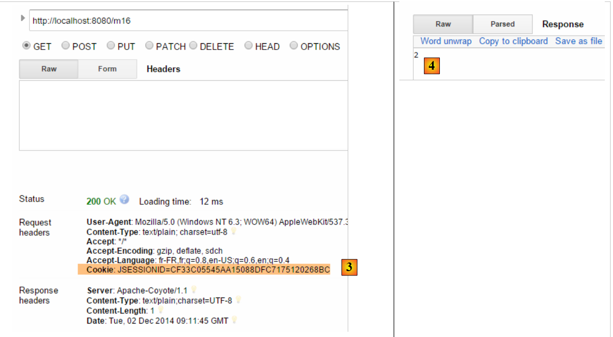 |
Agora, vamos usar outro navegador que representará um segundo usuário. Neste caso, usaremos o navegador Opera:
 |
Acima, em [1], esse segundo usuário obtém um valor de contador igual a 1. Isso mostra que sua sessão e a do primeiro usuário são diferentes. Se observarmos as trocas cliente/servidor (Ctrl-Shift-I também no Opera), vemos em [2] que esse segundo usuário possui um cookie de sessão diferente do do primeiro usuário. É isso que garante a independência das sessões.
4.15. [/m17]: recuperar um objeto de escopo [application]
Voltemos à arquitetura de execução de uma ação:
 |
Sabemos como construir a sessão do usuário. Agora, vamos construir um objeto de escopo [application] cujo conteúdo será somente para leitura e acessível a todos os usuários. Introduzimos a classe [ApplicationModel], que será o objeto de escopo [application]:
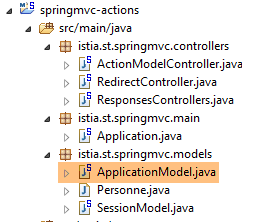 |
package istia.st.springmvc.models;
import java.util.concurrent.atomic.AtomicLong;
import org.springframework.stereotype.Component;
@Component
public class ApplicationModel {
// contador
private AtomicLong compteur = new AtomicLong(0);
// getters e setters
public AtomicLong getCompteur() {
return compteur;
}
public void setCompteur(AtomicLong compteur) {
this.compteur = compteur;
}
}
- linha 5: a anotação [@Component] faz com que a classe [ApplicationModel] seja um componente gerenciado pelo Spring. A natureza padrão dos componentes Spring é do tipo [singleton]: o componente é criado em uma única instância quando o contêiner Spring é instanciado, ou seja, geralmente ao iniciar a aplicação. Podemos utilizar esse ciclo de vida para armazenar no singleton informações de configuração que estarão acessíveis a todos os usuários;
- linha 11: um contador do tipo [AtomicLong]. Esse tipo possui um método [incrementAndGet] denominado atômico. Isso significa que um thread que executa esse método tem a garantia de que outro thread não lerá o valor do contador (Get) entre sua leitura (Get) e seu incremento (increment) pelo primeiro thread, o que causaria erros, já que dois threads leriam o mesmo valor do contador, e este, em vez de ser incrementado em dois, seria incrementado em um;
Criamos a seguinte nova ação [/m17]:
@Autowired
private ApplicationModel application;
// ----- gerenciar um objeto com escopo de aplicação [Autowired] ------------------------
@RequestMapping(value = "/m17", method = RequestMethod.GET, produces = "text/plain;charset=UTF-8")
public String m17() {
return String.valueOf(application.getCompteur().incrementAndGet());
}
- linhas 1-2: injetamos o componente [ApplicationModel] no controlador. Trata-se de um singleton. Portanto, cada usuário terá uma referência ao mesmo objeto;
- linha 7: devolvemos o contador de escopo [application] após incrementá-lo;
Aqui estão dois exemplos, um com o Chrome e outro com o Opera:
 | 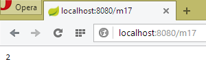 |
Acima, vemos que os dois navegadores trabalharam com o mesmo contador, o que não era o caso com a sessão. Esses dois navegadores representam dois usuários diferentes, ambos com acesso aos dados do escopo [application]. De modo geral, deve-se evitar colocar informações de leitura/gravação nos objetos do escopo [application], como foi feito acima com o contador. De fato, os threads de execução dos diferentes usuários acessam simultaneamente os dados do escopo [application]. Se houver informações graváveis, é necessário sincronizar os acessos de gravação, como foi feito acima com o tipo [AtomicLong]. Os acessos simultâneos são fonte de erros de programação. Portanto, é preferível incluir apenas informações somente para leitura nos objetos de escopo [application].
4.16. [/m18]: recuperar um objeto do escopo [session] com [@SessionAttributes]
Existe outra maneira de recuperar informações do escopo [session]. Vamos colocar o seguinte objeto na sessão:
package istia.st.springmvc.models;
public class Container {
// o contador
public int compteur=10;
// os getters e setters
public int getCompteur() {
return compteur;
}
public void setCompteur(int compteur) {
this.compteur = compteur;
}
}
Vamos utilizar esse objeto com as duas ações a seguir:
// uso de [@SessionAttribute] ----------------------
@RequestMapping(value = "/m18", method = RequestMethod.GET)
public void m18(HttpSession session) {
// aqui inserimos a chave [container] na sessão
session.setAttribute("container", new Container());
}
// uso de [@ModelAttribute] ----------------------
// a chave [container] da sessão será inserida aqui
@RequestMapping(value = "/m19", method = RequestMethod.GET)
public String m19(@ModelAttribute("container") Container container) {
container.setCompteur(1 + container.getCompteur());
return String.valueOf(container.getCompteur());
}
- linhas 3-6: a ação [/m18] não retorna nenhum resultado. Ela serve apenas para criar um objeto na sessão com a chave [container];
- linha 11: na ação [/m19], utiliza-se a anotação [@ModelAttribute]. O comportamento dessa anotação é bastante complexo. O parâmetro [container] dessa anotação pode designar diversas coisas e, em particular, um objeto da sessão. Para isso, é necessário que esse objeto tenha sido declarado com uma anotação [@SessionAttributes] na própria classe:
@RestController
@SessionAttributes({"container"})
public class ActionModelController {
- a linha 2 acima indica que a chave [container] faz parte dos atributos da sessão;
Resumindo:
- em [/m18], a chave [container] é inserida na sessão;
- a anotação [@SessionAttributes({"container"})] faz com que essa chave possa ser inserida em um parâmetro anotado com [@ModelAttribute("container")];
- embora não seja visível no exemplo de execução a seguir, uma informação anotada com [@ModelAttribute] passa automaticamente a fazer parte do modelo M transmitido à visualização V;
Aqui está um exemplo de execução. Primeiro, insere-se a chave [container] na sessão por meio da ação [/m18] [1]. Em seguida, chamamos duas vezes a ação [/m19] para observar o contador ser incrementado.
 |
4.17. [/m20-/m23]: injeção de informações com [@ModelAttribute]
Consideremos a seguinte nova ação:
// o atributo p fará parte de todos os modelos de visualização [Model] ----------------
@ModelAttribute("p")
public Personne getPersonne() {
return new Personne(7,"abcd", 14);
}
// ---------------instanciação de @ModelAttribute --------------------------
// será injetado se estiver na sessão
// será injetado se o controlador tiver definido um método para esse atributo
// pode ser derivado dos campos do URL, caso exista um conversor de String para o tipo do atributo
// caso contrário, é construído com o construtor padrão
// em seguida, os atributos do modelo são inicializados com os parâmetros do GET ou do POST
// o resultado final fará parte do modelo gerado pela ação
// o atributo p é inserido nos argumentos------------------------
@RequestMapping(value = "/m20", method = RequestMethod.GET)
public Personne m20(@ModelAttribute("p") Personne personne) {
return personne;
}
- linhas 2-5: definem um atributo de modelo chamado [p]. Trata-se do modelo M de uma vista V, modelo representado por um tipo [Model] no Spring MVC. Um modelo funciona como um dicionário de pares [clé, valeur]. Aqui, a chave [p] está associada ao objeto [Personne] construído pelo método [getPersonne]. O nome do método pode ser qualquer um;
- linha 17: o atributo de modelo da chave [p] é injetado nos parâmetros da ação. Essa injeção é feita de acordo com as regras das linhas 8 a 12. Aqui, estaremos no caso definido na linha 9. Portanto, na linha 17, o parâmetro [Personne personne] será o objeto [Personne(7,'abcd',14)];
- linha 18: retornamos o objeto [personne] para verificação. Este será serializado como jSON antes de ser enviado ao cliente.
Veja um exemplo:
 |
Agora, vamos examinar a ação a seguir:
// --------- o atributo p passa automaticamente a fazer parte do modelo M da visualização V
@RequestMapping(value = "/m21", method = RequestMethod.GET)
public String m21(Model model) {
return model.toString();
}
Uma ação que deseja exibir uma visualização V deve construir o modelo M dessa visualização. O Spring MVC gerencia esse modelo com um tipo [Model], que pode ser injetado nos parâmetros da ação. Inicialmente, esse modelo está vazio ou contém as informações marcadas com a anotação [@ModelAttribute]. A ação pode ou não enriquecer esse modelo antes de transmiti-lo a uma vista.
- linha 3: injeção do modelo M;
- linha 4: queremos ver o que há nele. Nós o serializamos como uma cadeia de caracteres para enviá-lo ao cliente. Aqui, o método [Personne.toString] será utilizado. Portanto, ele precisa existir;
Veja uma execução:
 |
Acima, vemos que as instruções:
@ModelAttribute("p")
public Personne getPersonne() {
return new Personne(7,"abcd", 14);
}
criaram uma entrada [p, Personne(7,'abcd',14)] no modelo. É sempre assim.
Consideremos agora o seguinte caso:
// caso contrário, é construído com o construtor padrão
// em seguida, os atributos do modelo são inicializados com os parâmetros do GET ou do POST
com a seguinte ação:
// --------- o atributo do modelo [param1] faz parte do modelo, mas não está inicializado
@RequestMapping(value = "/m22", method = RequestMethod.GET)
public String m22(@ModelAttribute("param1") String p1, Model model) {
return model.toString();
}
- linha 3: o atributo de modelo de chave [param1] não existe. Nesse caso, o tipo associado deve ter um construtor padrão. Esse é o caso aqui do tipo [String], mas não é possível escrever [@ModelAttribute("param1") Integer p1], pois a classe [Integer] não possui um construtor padrão;
- linha 4: retorna-se o modelo para verificar se o atributo de modelo de chave [param1] faz parte dele;
Aqui está um exemplo de execução:
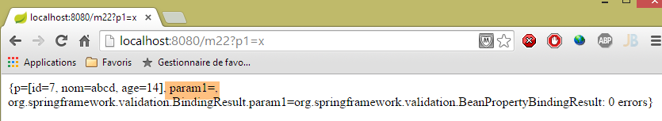 |
O atributo de modelo [param1] está presente no modelo, mas o método [toString] do valor associado não fornece nenhuma indicação sobre esse valor.
Consideremos agora a seguinte ação, na qual inserimos explicitamente uma informação no modelo:
// --------- o atributo do modelo [param2] é inserido explicitamente no modelo
@RequestMapping(value = "/m23", method = RequestMethod.GET)
public String m23(String p2, Model model) {
model.addAttribute("param2",p2);
return model.toString();
}
- linha 4: o valor [p2] recuperado na linha 3 é inserido no modelo associado à chave [param2]:
Aqui está um exemplo de execução:
 |
As regras mudam se o parâmetro da ação for um objeto. Aqui está um primeiro exemplo:
// ------ o atributo do modelo [unePersonne] é inserido automaticamente no modelo
@RequestMapping(value = "/m23b", method = RequestMethod.GET)
public String m23b(@ModelAttribute("unePersonne") Personne p1, Model model) {
return model.toString();
}
A ação não altera o modelo que lhe foi fornecido. O resultado é o seguinte:
 |
Observa-se que a anotação [@ModelAttribute("unePersonne") Personne p1] inseriu a pessoa [p1] no modelo, associada à chave [unePersonne].
Consideremos agora a seguinte ação:
// --------- a pessoa p1 é inserida automaticamente no modelo
// -------- com a chave sendo o nome de sua classe, com o primeiro caractere em minúscula
@RequestMapping(value = "/m23c", method = RequestMethod.GET)
public String m23c(Personne p1, Model model) {
return model.toString();
}
- linha 4: a anotação [@ModelAttribute] não foi inserida;
O resultado é o seguinte:
 |
Percebe-se que a presença do parâmetro [Personne p1] inseriu a pessoa [p1] no modelo, associada à chave [personne], que é o nome da classe [Personne] com o primeiro caractere em minúscula.
4.18. [/m24]: validação do modelo da ação
Consideremos o seguinte modelo de ação [ActionModel01]:
 |
package istia.st.springmvc.models;
import javax.validation.constraints.NotNull;
public class ActionModel01 {
// dados
@NotNull
private Integer a;
@NotNull
private Double b;
// getters e setters
...
}
- linhas 8 e 9: a anotação [@NotNull] é uma restrição de validação que indica que o dado anotado não pode ter o valor null;
Vamos agora examinar a seguinte ação:
// ----------------------- validação de um modelo ------------------------
@RequestMapping(value = "/m24", method = RequestMethod.GET)
public Map<String, Object> m24(@Valid ActionModel01 data, BindingResult result) {
Map<String, Object> map = new HashMap<String, Object>();
// erros?
if (result.hasErrors()) {
StringBuffer buffer = new StringBuffer();
// percorro a lista de erros
for (FieldError error : result.getFieldErrors()) {
buffer.append(String.format("[%s:%s:%s:%s:%s]", error.getField(), error.getRejectedValue(),
String.join(" - ", error.getCodes()), error.getCode(),error.getDefaultMessage()));
}
map.put("errors", buffer.toString());
} else {
// sem erros
Map<String, Object> mapData = new HashMap<String, Object>();
mapData.put("a", data.getA());
mapData.put("b", data.getB());
map.put("data", mapData);
}
return map;
}
- linha 3: um objeto [ActionModel01] será instanciado e seus campos [a, b] serão inicializados com parâmetros de nomes iguais. A anotação [@Valid] indica que as restrições de validade devem ser verificadas. Os resultados dessa verificação serão armazenados no parâmetro do tipo [BindingResult] (segundo parâmetro). Serão realizadas as seguintes verificações:
- devido às anotações [@NotNull], os parâmetros [a] e [b] devem estar presentes;
- devido ao tipo [Integer a], o parâmetro [a], que por natureza é do tipo [String], deve ser conversível para o tipo [Integer];
- devido ao tipo [Double b], o parâmetro [b], que por natureza é do tipo [String], deve ser conversível para o tipo [Double];
Com a anotação [@Valid], os erros de validação serão reportados no parâmetro [BindingResult result]. Sem a anotação [@Valid], os erros de validação causam uma falha na ação e o servidor envia ao cliente uma resposta HTTP com o status 500 (Erro interno do servidor).
- linha 3: o resultado da ação é do tipo [Map]. Será a string jSON desse resultado que será enviada ao cliente. São criados dois tipos de dicionário:
- em caso de falha, um dicionário com uma entrada ['errors', value], em que [value] é uma sequência de caracteres que descreve todos os erros (linha 13);
- em caso de sucesso, um dicionário com uma entrada ['data',value], em que [value] é, por sua vez, um dicionário com duas entradas: ['a', value], ['b', value] (linha 19);
- linhas 9-12: para cada erro [error] detectado, constrói-se a sequência [error.getField(), error.getRejectedValue(), error.Codes, error.getDefaultMessage()]:
- o primeiro elemento é o campo com erro, [a] ou [b],
- o segundo elemento é o valor rejeitado, por exemplo, [x],
- o terceiro elemento é uma lista de códigos de erro. Veremos suas funções em breve;
- o quarto elemento é o código do erro. Ele faz parte da lista anterior;
- o último elemento é a mensagem de erro padrão. De fato, é possível ter várias mensagens de erro;
Aqui estão alguns exemplos de execução:
 |
Acima, vemos que:
- a atribuição de 'x' ao campo [ActionModel01.a] falhou e a mensagem de erro explica o motivo;
- a atribuição de 'y' ao campo [ActionModel01.b] falhou e a mensagem de erro explica o motivo;
Observe os códigos de erro no campo [a]: [typeMismatch.actionModel01.a - typeMismatch.a - typeMismatch.java.lang.Integer - typeMismatch]. Voltaremos a esses códigos de erro quando for necessário personalizar a mensagem de erro. Observe que o código do erro é [typeMismatch].
Outro exemplo:
 |
Aqui, os parâmetros [a] e [b] não foram passados. Os validadores [@NotNull] do modelo de ação [ActionModel01] cumpriram, então, sua função;
Finalmente, valores corretos:
 |
4.19. [m/24]: personalização das mensagens de erro
Voltemos a uma captura de tela do exemplo anterior:
|
Vemos acima as mensagens de erro padrão. É claro que não podemos mantê-las em um aplicativo real. É possível definir essas mensagens de erro. Para isso, vamos nos valer dos códigos de erro. Acima, vemos que o erro no campo [a] possui os seguintes códigos: [typeMismatch.actionModel01.a - typeMismatch.a - typeMismatch.java.lang.Integer - typeMismatch]. Esses códigos de erro vão do mais específico ao menos específico:
- [typeMismatch.actionModel01.a]: erro de tipo no campo [a] do tipo [ActionModel01];
- [typeMismatch.a]: erro de tipo no campo denominado [a];
- [typeMismatch.java.lang.Integer]: erro de tipo no tipo Integer;
- [typeMismatch]: erro de tipo;
Observa-se também que o código de erro no campo [a], obtido a partir de [error.getCode()], é [typeMismatch] (ver captura de tela acima).
Vamos colocar as mensagens de erro em um arquivo de propriedades:
 |
O arquivo [messages.properties] acima ficará da seguinte forma:
NotNull=Le champ ne peut être vide
typeMismatch=Format invalide
typeMismatch.model01.a=Le paramètre [a] doit être entier
Cada linha tem o seguinte formato:
Aqui, a chave será um código de erro e a mensagem, a mensagem de erro associada a esse código.
Lembramos os códigos de erro para os dois campos:
- [typeMismatch.actionModel01.a - typeMismatch.a - typeMismatch.java.lang.Integer - typeMismatch], quando o parâmetro [a] é inválido;
- [typeMismatch.actionModel01.b - typeMismatch.b - typeMismatch.java.lang.Double - typeMismatch:typeMismatch ], quando o parâmetro [b] é inválido;
- [NotNull.actionModel01.a - NotNull.a - NotNull.java.lang.Integer - NotNull] quando o parâmetro [a] está ausente;
- [NotNull.actionModel01.b - NotNull.b - NotNull.java.lang.Double - NotNull] quando o parâmetro [b] estiver ausente;
O arquivo [messages.properties] deve conter uma mensagem de erro para todos os casos de erro possíveis. No caso de:
- os parâmetros [a] e [b] estiverem ausentes, será utilizado o código [NotNull];
- no caso de o parâmetro [a] estar incorreto, definimos mensagens para dois códigos: [typeMismatch.actionModel01.a, typeMismatch]. Veremos qual deles será utilizado;
- se o parâmetro [b] estiver incorreto, será utilizado o código [typeMismatch];
Para que o arquivo [messages.properties] seja utilizado, é necessário configurar o Spring:
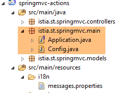 |
Removemos as anotações de configuração da classe [Application]:
package istia.st.springmvc.main;
import org.springframework.boot.SpringApplication;
public class Application {
public static void main(String[] args) {
SpringApplication.run(Config.class, args);
}
}
- linha 8: a aplicação Spring Boot é iniciada. O primeiro parâmetro do método estático [SpringApplication.run] é a classe que agora configura a aplicação;
A classe [Config] é a seguinte:
package istia.st.springmvc.main;
import org.springframework.boot.autoconfigure.EnableAutoConfiguration;
import org.springframework.context.MessageSource;
import org.springframework.context.annotation.Bean;
import org.springframework.context.annotation.ComponentScan;
import org.springframework.context.annotation.Configuration;
import org.springframework.context.support.ResourceBundleMessageSource;
import org.springframework.web.servlet.config.annotation.WebMvcConfigurerAdapter;
@Configuration
@ComponentScan({ "istia.st.springmvc.controllers", "istia.st.springmvc.models" })
@EnableAutoConfiguration
public class Config extends WebMvcConfigurerAdapter {
@Bean
public MessageSource messageSource() {
ResourceBundleMessageSource messageSource = new ResourceBundleMessageSource();
messageSource.setBasename("i18n/messages");
return messageSource;
}
}
- linhas 11-13: encontramos as anotações de configuração que antes estavam na classe [Application];
- linha 14: para configurar uma aplicação Spring MVC, é necessário estender a classe [WebMvcConfigurerAdapter];
- linha 15: a anotação [@Bean] introduz um componente Spring, um singleton;
- linha 16: define-se um bean chamado [messageSource] (o nome do método). Esse bean serve para definir os arquivos de mensagens da aplicação e deve obrigatoriamente ter esse nome;
- linhas 17-19: indicam ao Spring que o arquivo de mensagens:
- está na pasta [i18n] no Classpath do projeto (linha 18),
- chama-se [messages.properties] (linha 18). Na verdade, o termo [messages] é a raiz dos nomes dos arquivos de mensagens, e não o nome em si. Veremos que, no contexto da internacionalização, podem existir vários arquivos de mensagens, um para cada cultura gerenciada. Assim, podemos ter [messages_fr.properties] para o francês e [messages_en.properties] para o inglês. Os sufixos adicionados à raiz [messages] são padronizados. Não é possível inserir qualquer coisa;
No projeto STS, é preciso colocar a pasta [i18n] na pasta de recursos, pois ela é incluída no Classpath do projeto:
 |
Para utilizar esse arquivo, criamos a seguinte nova ação:
// validação de um modelo, gerenciamento de mensagens de erro ------------------------
@RequestMapping(value = "/m25", method = RequestMethod.GET)
public Map<String, Object> m25(@Valid ActionModel01 data, BindingResult result, HttpServletRequest request)
throws Exception {
// o dicionário de resultados
Map<String, Object> map = new HashMap<String, Object>();
// o contexto da aplicação Spring
WebApplicationContext ctx = WebApplicationContextUtils.getWebApplicationContext(request.getServletContext());
// local
Locale locale = RequestContextUtils.getLocale(request);
// erros?
if (result.hasErrors()) {
StringBuffer buffer = new StringBuffer();
for (FieldError error : result.getFieldErrors()) {
// busca da mensagem de erro com base nos códigos de erro
// a mensagem é pesquisada nos arquivos de mensagens
// códigos de erro em forma de tabela
String[] codes = error.getCodes();
// na forma de string
String listCodes = String.join(" - ", codes);
// Pesquisa
String msg = null;
int i = 0;
while (msg == null && i < codes.length) {
try {
msg = ctx.getMessage(codes[i], null, locale);
} catch (Exception e) {
}
i++;
}
// foi encontrada?
if (msg == null) {
throw new Exception(String.format("Indiquez un message pour l'un des codes [%s]", listCodes));
}
// foi encontrado — adiciona-se a mensagem de erro à lista de mensagens de erro
buffer.append(String.format("[%s:%s:%s:%s]", locale.toString(), error.getField(), error.getRejectedValue(),
String.join(" - ", msg)));
}
map.put("errors", buffer.toString());
} else {
// ok
Map<String, Object> mapData = new HashMap<String, Object>();
mapData.put("a", data.getA());
mapData.put("b", data.getB());
map.put("data", mapData);
}
return map;
}
Esse código é semelhante ao da ação [/m24]. Explicamos as diferenças:
- linha 3: injetamos a solicitação [HttpServletRequest request] nos parâmetros da ação. Vamos precisar dela;
- linhas 7-8: recuperamos o contexto do Spring. Esse contexto contém todos os beans do Spring da aplicação. Ele também permite acessar os arquivos de mensagens;
- linha 10: recuperamos a localização da aplicação. Esse termo é explicado mais adiante;
- linhas 15-31: para cada erro, procuramos uma mensagem correspondente a um desses códigos de erro. Eles são pesquisados na ordem dos códigos encontrados em [error.getCodes()]. Assim que uma mensagem é encontrada, paramos;
- linha 26: como recuperar uma mensagem no [messages.properties]:
- o primeiro parâmetro é o código procurado no [messages.properties],
- o segundo é um array de parâmetros, pois, às vezes, as mensagens são configuradas. Esse não é o caso aqui,
- o terceiro é a localização utilizada (obtida na linha 10). A localização indica o idioma utilizado: [fr_FR] para o francês da França, [en_US] para o inglês dos USA. A mensagem é procurada em messages_[locale].properties; portanto, por exemplo, em [messages_fr_FR.properties]. Se esse arquivo não existir, a mensagem é procurada em [messages_fr.properties]. Se esse arquivo não existir, a mensagem será procurada em [messages.properties]. É esse último caso que funcionará para nós;
- linhas 25-29: de forma um pouco inesperada, quando se procura um código inexistente em um arquivo de mensagens, ocorre uma exceção em vez de um ponteiro nulo;
- linhas 33-35: tratamos o caso em que não há mensagem de erro;
- linhas 37-38: construímos a string de erro. Nela, incluímos a localização e a mensagem de erro encontrada;
Aqui estão alguns exemplos de execução:
 |
Percebe-se que:
- a localização do aplicativo é [fr_FR]. Trata-se de um valor padrão, já que não fizemos nada para inicializá-la;
- que a mensagem utilizada para os dois campos é a seguinte:
NotNull=Le champ ne peut être vide
Outro exemplo:
 |
Percebe-se que:
- a mensagem de erro utilizada para o parâmetro [a] é a seguinte:
typeMismatch.actionModel01.a=Le paramètre [a] doit être entier
- a mensagem de erro utilizada para o parâmetro [b] é a seguinte:
typeMismatch=Format invalide
Por que duas mensagens diferentes? Para o parâmetro [a], havia duas mensagens possíveis:
typeMismatch=Format invalide
typeMismatch.actionModel01.a=Le paramètre [a] doit être entier
Os códigos de erro foram analisados na ordem da tabela [error.getCodes()]. Verifica-se que essa ordem vai do código mais específico ao mais geral. É por isso que o código [typeMismatch.model01.a] foi encontrado primeiro.
4.20. [/m25]: internacionalização de uma aplicação Spring MVC
Agora que sabemos como personalizar as mensagens de erro em francês, gostaríamos de tê-las também em inglês, o que nos leva à internacionalização de uma aplicação Spring MVC. Para lidar com isso, vamos ampliar a classe de configuração [Config], que passa a ter a seguinte forma:
package istia.st.springmvc.main;
import java.util.Locale;
import org.springframework.boot.autoconfigure.EnableAutoConfiguration;
import org.springframework.context.MessageSource;
import org.springframework.context.annotation.Bean;
import org.springframework.context.annotation.ComponentScan;
import org.springframework.context.annotation.Configuration;
import org.springframework.context.support.ResourceBundleMessageSource;
import org.springframework.web.servlet.config.annotation.InterceptorRegistry;
import org.springframework.web.servlet.config.annotation.WebMvcConfigurerAdapter;
import org.springframework.web.servlet.i18n.CookieLocaleResolver;
import org.springframework.web.servlet.i18n.LocaleChangeInterceptor;
@Configuration
@ComponentScan({ "istia.st.springmvc.controllers", "istia.st.springmvc.models" })
@EnableAutoConfiguration
public class Config extends WebMvcConfigurerAdapter {
@Bean
public MessageSource messageSource() {
ResourceBundleMessageSource messageSource = new ResourceBundleMessageSource();
messageSource.setBasename("i18n/messages");
return messageSource;
}
@Bean
public LocaleChangeInterceptor localeChangeInterceptor() {
LocaleChangeInterceptor localeChangeInterceptor = new LocaleChangeInterceptor();
localeChangeInterceptor.setParamName("lang");
return localeChangeInterceptor;
}
@Override
public void addInterceptors(InterceptorRegistry registry) {
registry.addInterceptor(localeChangeInterceptor());
}
@Bean
public CookieLocaleResolver localeResolver() {
CookieLocaleResolver localeResolver = new CookieLocaleResolver();
localeResolver.setCookieName("lang");
localeResolver.setDefaultLocale(new Locale("fr"));
return localeResolver;
}
}
- linhas 28-32: criamos um interceptador de solicitação. Um interceptador de solicitação estende a interface [HandlerInterceptor]. Essa classe inspeciona a solicitação recebida antes que ela seja processada por uma ação. Aqui, o interceptador [localeChangeInterceptor] irá procurar um parâmetro chamado [lang] na solicitação recebida, GET ou POST e alterará a localidade do aplicativo de acordo com esse parâmetro. Assim, se o parâmetro for [lang=en_US], a localidade do aplicativo passará a ser o inglês de USA;
- linhas 34-37: redefinimos o método [WebMvcConfigurerAdapter.addInterceptors] para adicionar o interceptador anterior;
- linhas 39-45: servem para definir como a localização será encapsulada em um cookie. Sabe-se que um cookie pode servir como memória do usuário, já que o navegador do cliente o reenvia sistematicamente ao servidor. O interceptador [localeChangeInterceptor] anterior cria um cookie que encapsula a localização. A linha 42 atribui o nome [lang] a esse cookie. O cookie também é usado para alterar a localidade;
- linha 43: indica que, na ausência do cookie [lang], a localização será [fr];
Em resumo, a localidade de uma solicitação pode ser definida de duas maneiras:
- passando um parâmetro chamado [lang];
- enviando um cookie chamado [lang]. Esse cookie é criado automaticamente após a execução do método anterior;
Para utilizar essa localidade, vamos criar arquivos de mensagens para as localidades [fr] e [en]:
 |
O arquivo [messages_fr.properties] é o seguinte:
NotNull=Le champ ne peut être vide
typeMismatch=Format invalide
typeMismatch.actionModel01.a=Le paramètre [a] doit être entier
O arquivo [messages_en.properties] é o seguinte:
NotNull=The field can't be empty
typeMismatch=Invalid format
typeMismatch.actionModel01.a=Parameter [a] must be an integer
O arquivo [messages.properties] é uma cópia do arquivo [messages_en.properties]. Vale lembrar que o arquivo [messages.properties] é utilizado quando não é encontrado nenhum arquivo correspondente à localidade da solicitação. No nosso caso, se o usuário enviar um parâmetro [lang=en], como o arquivo [messages_en.properties] não existe, será utilizado o arquivo [messages.properties]. O usuário receberá, portanto, mensagens em inglês.
Vamos tentar. Primeiro, no ambiente de desenvolvimento do Chrome (Ctrl+Shift+I), verifique seus cookies:
 |
Se você tiver um cookie chamado [lang], exclua-o. Em seguida, no Chrome, solicite o URL e o [http://localhost:8080/m25]:
 |
O navegador enviou os seguintes cabeçalhos HTTP:
Percebe-se que, nesses cabeçalhos, não há nenhum cookie [lang]. Nesse caso, nosso código utiliza a localização [fr]. É o que mostra a captura de tela. Vamos tentar outro caso:
 |
- em [1], passamos o parâmetro [lang=en] para alterar a localização para [en];
- em [2], vemos a nova configuração regional;
- em [3], a mensagem foi alterada para inglês;
Vamos agora analisar as trocas em HTTP:
 |
Vemos acima que o servidor enviou um cookie [lang]. Isso tem uma consequência importante: a localização da próxima solicitação será [en] novamente, devido ao cookie [lang] que será enviado pelo navegador. Portanto, devemos manter as mensagens em inglês. Vamos verificar isso:
 |
Acima, vemos que a localização permaneceu como [en]. Devido ao cookie que o navegador envia sistematicamente, ela permanecerá assim enquanto o usuário não a alterar, enviando o parâmetro [lang] da seguinte forma:
 |
4.21. [/m26]: injeção da localidade no modelo da ação
No exemplo anterior, vimos uma maneira de recuperar a localidade da solicitação:
@RequestMapping(value = "/m25", method = RequestMethod.GET)
public Map<String, Object> m25(@Valid ActionModel01 data, BindingResult result, HttpServletRequest request)
throws Exception {
...
// local
Locale locale = RequestContextUtils.getLocale(request);
// erros?
A localização pode ser inserida diretamente nos parâmetros da ação. Veja um exemplo:
@RequestMapping(value = "/m26", method = RequestMethod.GET)
public String m26(Locale locale) {
return String.format("locale=%s", locale.toString());
}
 |  |
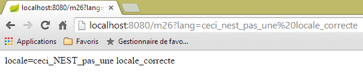 |
Vê-se acima que não há verificação da validade da localidade solicitada. No entanto, a seguinte solicitação do navegador gera uma exceção no servidor, pois o cookie de localidade que ele recebe está incorreto.
4.22. [/m27]: verificar a validade de um modelo com o Hibernate Validator
Consideremos a seguinte nova ação:
//validação de um modelo com o Hibernate Validator ------------------------
@RequestMapping(value = "/m27", method = RequestMethod.POST)
public Map<String, Object> m27(@Valid ActionModel02 data, BindingResult result) {
Map<String, Object> map = new HashMap<String, Object>();
// erros?
if (result.hasErrors()) {
// navegação pela lista de erros
for (FieldError error : result.getFieldErrors()) {
map.put(error.getField(),
String.format("[message=%s, codes=%s]", error.getDefaultMessage(), String.join("|", error.getCodes())));
}
} else {
// sem erros
map.put("data", data);
}
return map;
}
Temos aqui um código que já vimos várias vezes:
- linha 3: a ação [/m27] é solicitada por meio de um POST;
- linhas 8-11: cada erro será identificado por [champ, message] com:
- campo: o campo com erro,
- mensagem: a mensagem de erro associada, bem como a lista de códigos de erro;
- linha 14: se não houver erros, retorna-se a cadeia jSON com os valores lançados;
Na linha 3, utiliza-se o modelo de ação [ActionModel02] a seguir:
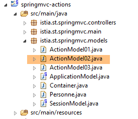 |
package istia.st.springmvc.models;
import java.util.Date;
import javax.validation.constraints.AssertFalse;
import javax.validation.constraints.AssertTrue;
import javax.validation.constraints.Future;
import javax.validation.constraints.Max;
import javax.validation.constraints.Min;
import javax.validation.constraints.NotNull;
import javax.validation.constraints.Past;
import javax.validation.constraints.Pattern;
import javax.validation.constraints.Size;
import org.hibernate.validator.constraints.Email;
import org.hibernate.validator.constraints.Length;
import org.hibernate.validator.constraints.NotBlank;
import org.hibernate.validator.constraints.Range;
import org.hibernate.validator.constraints.URL;
public class ActionModel02 {
@NotNull(message = "La donnée est obligatoire")
@AssertFalse(message = "Seule la valeur [false] est acceptée")
private Boolean assertFalse;
@NotNull(message = "La donnée est obligatoire")
@AssertTrue(message = "Seule la valeur [true] est acceptée")
private Boolean assertTrue;
@NotNull(message = "La donnée est obligatoire")
@Future(message = "Il faut une date postérieure à aujourd'hui")
private Date dateInFuture;
@NotNull(message = "La donnée est obligatoire")
@Past(message = "Il faut une date antérieure à aujourd'hui")
private Date dateInPast;
@NotNull(message = "La donnée est obligatoire")
@Max(value = 100, message = "Maximum 100")
private Integer intMax100;
@NotNull(message = "La donnée est obligatoire")
@Min(value = 10, message = "Minimum 10")
private Integer intMin10;
@NotNull(message = "La donnée est obligatoire")
@NotBlank(message = "La chaîne doit être non blanche")
private String strNotBlank;
@NotNull(message = "La donnée est obligatoire")
@Size(min = 4, max = 6, message = "La chaîne doit avoir entre 4 et 6 caractères")
private String strBetween4and6;
@NotNull(message = "La donnée est obligatoire")
@Pattern(regexp = "^\\d{2}:\\d{2}:\\d{2}$", message = "Le format doit être hh:mm:ss")
private String hhmmss;
@NotNull(message = "La donnée est obligatoire")
@Email(message = "Adresse invalide")
private String email;
@NotNull(message = "La donnée est obligatoire")
@Length(max = 4, min = 4, message = "La chaîne doit avoir 4 caractères exactement")
private String str4;
@Range(min = 10, max = 14, message = "La valeur doit être dans l'intervalle [10,14]")
@NotNull(message = "La donnée est obligatoire")
private Integer int1014;
@URL(message = "URL invalide")
private String url;
// getters e setters
...
}
A classe utiliza restrições de validação provenientes de dois pacotes:
- [javax.validation.constraints] nas linhas 5 a 13;
- [org.hibernate.validator.constraints] nas linhas 15 a 19;
As dependências Maven desses dois pacotes estão presentes no projeto:
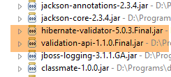 |
Aqui, não vamos usar mensagens internacionalizadas, mas sim mensagens definidas dentro da restrição com o atributo [message]. Para testar essa ação, vamos usar [Advanced Rest Client]:
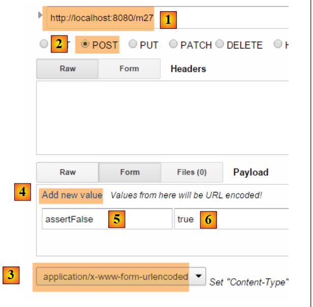 |
- em [1-2], a consulta POST;
- em [3], o cabeçalho HTTP [Content-Type] a ser utilizado;
- em [4], o link [Add new value] permite adicionar um par [paramètre, value];
- em [5], insira um campo de [ActionModel02], neste caso o campo [assertFalse]:
@NotNull(message = "La donnée est obligatoire")
@AssertFalse(message = "Seule la valeur [false] est acceptée")
private Boolean assertFalse;
- em [6], insira um valor incorreto para visualizar uma mensagem de erro. Acima, a restrição [@AssertFalse] exige que o campo [assertFalse] tenha o valor [false];
 |
- em [7], a resposta do servidor: a restrição [@NotNull] para campos vazios foi acionada e a mensagem de erro associada foi exibida;
- em [8], a mensagem do campo [assertFalse] para o qual a restrição [@AssertFalse] não foi verificada, bem como os códigos desse erro. Vale lembrar que esses códigos podem estar associados a mensagens internacionalizadas;
Aqui está outro exemplo:
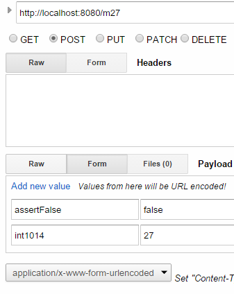 |

Convidamos o leitor a testar os diferentes casos de erro até chegar ao POST, cujos dados são todos válidos:
 |  |
Observação: o formato das datas é o formato anglo-saxão: mm/dd/aaaa.
4.23. [/m28]: externalização das mensagens de erro
Na classe [ActionModel02], colocamos as mensagens de forma “estática”. É preferível externalizá-las em arquivos de mensagens. Seguimos o exemplo da ação [/m25]. Criamos o novo modelo de ação [ActionModel03] a seguir:
 |
package istia.st.springmvc.models;
import java.util.Date;
import javax.validation.constraints.AssertFalse;
import javax.validation.constraints.AssertTrue;
import javax.validation.constraints.Future;
import javax.validation.constraints.Max;
import javax.validation.constraints.Min;
import javax.validation.constraints.NotNull;
import javax.validation.constraints.Past;
import javax.validation.constraints.Pattern;
import javax.validation.constraints.Size;
import org.hibernate.validator.constraints.Email;
import org.hibernate.validator.constraints.Length;
import org.hibernate.validator.constraints.NotBlank;
import org.hibernate.validator.constraints.Range;
import org.hibernate.validator.constraints.URL;
public class ActionModel03 {
@NotNull
@AssertFalse
private Boolean assertFalse;
@NotNull
@AssertTrue
private Boolean assertTrue;
@NotNull
@Future
private Date dateInFuture;
@NotNull
@Past
private Date dateInPast;
@NotNull
@Max(value = 100)
private Integer intMax100;
@NotNull
@Min(value = 10)
private Integer intMin10;
@NotNull
@NotBlank
private String strNotBlank;
@NotNull
@Size(min = 4, max = 6)
private String strBetween4and6;
@NotNull
@Pattern(regexp = "^\\d{2}:\\d{2}:\\d{2}$")
private String hhmmss;
@NotNull
@Email
private String email;
@NotNull
@Length(max = 4, min = 4)
private String str4;
@Range(min = 10, max = 14)
@NotNull
private Integer int1014;
@URL
private String url;
// getters e setters
...
}
As mensagens de erro são externalizadas nos arquivos [messages.properties]:
 |
O arquivo [messages_fr.properties] é o seguinte:
NotNull=Le champ ne peut être vide
typeMismatch=Format invalide
typeMismatch.actionModel01.a=Le paramètre [a] doit être entier
Range.actionModel03.int1014=La valeur doit être dans l'intervalle [10,14]
NotBlank.actionModel03.strNotBlank=La chaîne doit être non blanche
AssertFalse.actionModel03.assertFalse=Seule la valeur [false] est acceptée
Pattern.actionModel03.hhmmss=Le format doit être hh:mm:ss
Past.actionModel03.dateInPast=Il faut une date antérieure ou égale à celle d'aujourd'hui
Future.actionModel03.dateInFuture=Il faut une date postérieure à celle d'aujourd'hui
Length.actionModel03.str4=La chaîne doit avoir 4 caractères exactement
Min.actionModel03.intMin10=Minimum 10
Max.actionModel03.intMax100=Maximum 100
AssertTrue.actionModel03.assertTrue=Seule la valeur [true] est acceptée
Email.actionModel03.email=Adresse invalide
Size.actionModel03.strBetween4and6=La chaîne doit avoir entre 4 et 6 caractères
URL.actionModel03.url=URL invalide
As mensagens de erro foram adicionadas às linhas 4 a 16. Elas têm o seguinte formato:
Os códigos não podem ser quaisquer. São aqueles exibidos na ação [/m27] anterior. Por exemplo:

Nos arquivos de mensagens, é necessário utilizar um dos quatro códigos acima para o campo [int1014].
O arquivo [messages_en.properties] é o seguinte:
NotNull=The field can't be empty
typeMismatch=Invalid format
typeMismatch.actionModel01.a=Parameter [a] must be an integer
Range.actionModel03.int1014=Value must be in [10,14] interval
NotBlank.actionModel03.strNotBlank=String can't be empty
AssertFalse.actionModel03.assertFalse=Only boolean [false] is allowed
Pattern.actionModel03.hhmmss=String format is hh:mm:ss
Past.actionModel03.dateInPast=Date must be before or equal to today's date
Future.actionModel03.dateInFuture=Date must be after today's date
Length.actionModel03.str4=String must be four characters long
Min.actionModel03.intMin10=Minimum 10
Max.actionModel03.intMax100=Maximum 100
AssertTrue.actionModel03.assertTrue=Only boolean [true] is allowed
Email.actionModel03.email=Invalid email
Size.actionModel03.strBetween4and6=String must be between four and six characters long
URL.actionModel03.url=Invalid URL
O modelo de ação [ActionModel03] é utilizado pela seguinte ação:
// ----------------------- externalização das mensagens de erro ------------------------
@RequestMapping(value = "/m28", method = RequestMethod.POST)
public Map<String, Object> m28(@Valid ActionModel03 data, BindingResult result, HttpServletRequest request) {
Map<String, Object> map = new HashMap<String, Object>();
// o contexto da aplicação Spring
WebApplicationContext ctx = WebApplicationContextUtils.getWebApplicationContext(request.getServletContext());
// local
Locale locale = RequestContextUtils.getLocale(request);
// erros?
if (result.hasErrors()) {
for (FieldError error : result.getFieldErrors()) {
// busca da mensagem de erro com base nos códigos de erro
// a mensagem é pesquisada nos arquivos de mensagens
// códigos de erro em forma de tabela
String[] codes = error.getCodes();
// na forma de string
String listCodes = String.join(" - ", codes);
// Pesquisa
String msg = null;
int i = 0;
while (msg == null && i < codes.length) {
try {
msg = ctx.getMessage(codes[i], null, locale);
} catch (Exception e) {
}
i++;
}
// foi encontrado?
if (msg == null) {
msg = String.format("Indiquez un message pour l'un des codes [%s]", listCodes);
}
// foi encontrado — adiciona-se o erro ao dicionário
map.put(error.getField(), msg);
}
} else {
// sem erros
map.put("data", data);
}
return map;
}
Já comentamos sobre esse tipo de código. A única coisa realmente importante é a linha 23: a mensagem de erro exibida depende da configuração regional da solicitação.
Aqui está um exemplo em francês:
 |  |
e agora em inglês:
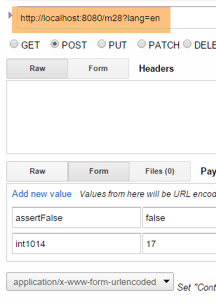 |  |